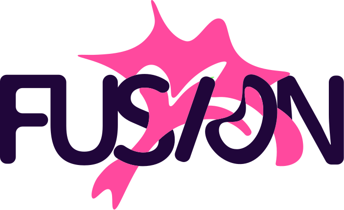
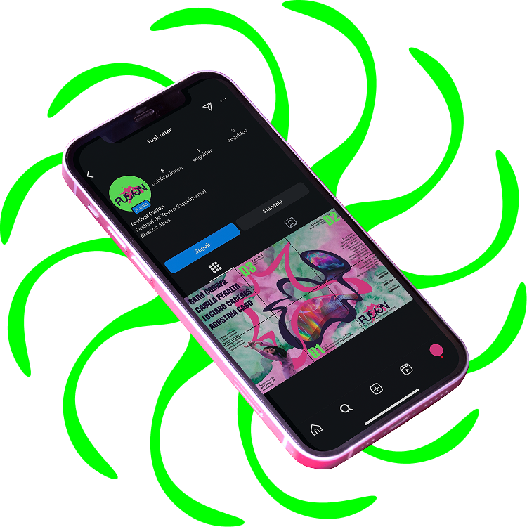

1. BRANDING
Fusion es un festival de teatro inmersivo (Experimentación y Conexión). Su identidad visual se basa en la experimentación con acuarelas, generando una gráfica orgánica y no convencional. Esto se traduce en una tipografía deformada y colores saturados, con formas entrelazadas que simbolizan la conexión entre el público y el arte.

